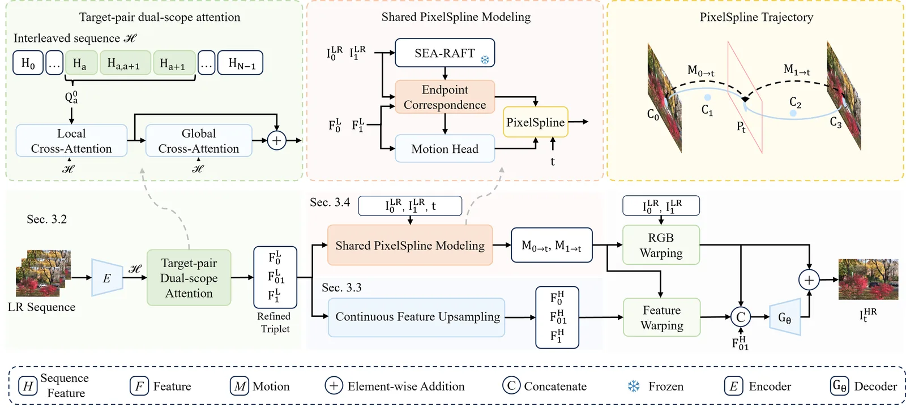
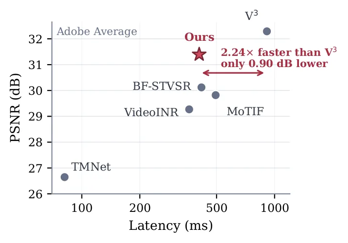
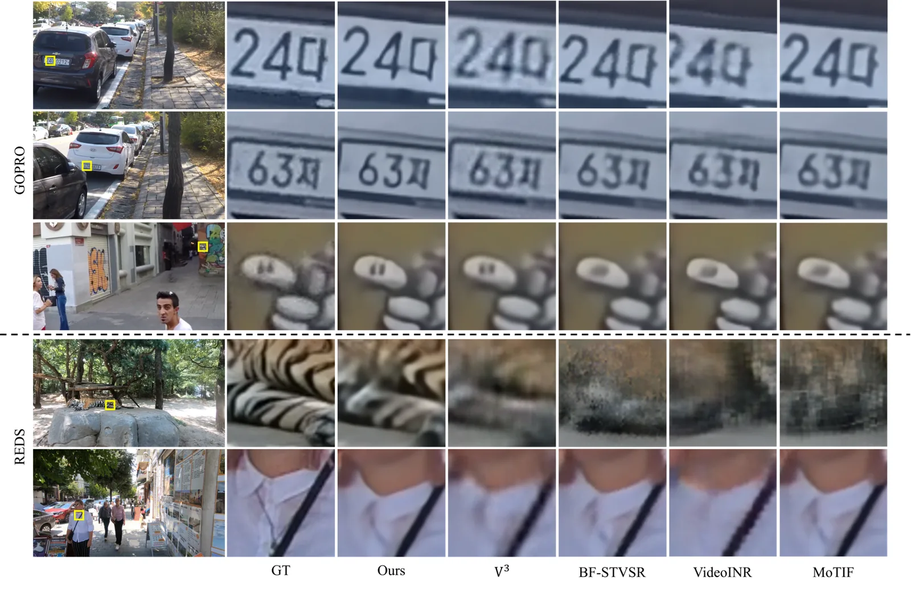

O Desafio da Super-resolução Contínua
A super-resolução de vídeo (VSR) tradicional visa recuperar vídeos de alta resolução (HR) a partir de observações de baixa resolução (LR). No entanto, melhorar apenas a resolução espacial não resolve a subamostragem temporal: um vídeo nítido ainda pode exibir movimento descontínuo se capturado em baixa taxa de quadros. A interpolação de quadros (VFI) aborda isso, mas não recupera detalhes espaciais perdidos. O Space-Time Video Super-Resolution (STVSR) combina ambas, mas os métodos contínuos (C-STVSR) vão além, permitindo consultas em escalas espaciais arbitrárias e coordenadas de tempo contínuas.
Apesar dos avanços, três desafios persistem. Primeiro, a correspondência inferida apenas de dois frames de extremidade é ambígua em regiões de oclusão ou com movimento grande. Segundo, métodos existentes modelam as direções de movimento dos dois endpoints independentemente, sem garantir que sigam a mesma curva física. Terceiro, a síntese temporal arbitrária exige features de aparência em grade HR, o que geralmente é feito tardiamente, perdendo detalhes finos durante o transporte temporal.
A Proposta: PixelSpline e Contexto Longo
Os autores propõem um framework contínuo composto por quatro estágios principais. O primeiro é um codificador de contexto longo que agrega informações de múltiplos frames LR para produzir representações de extremidade aprimoradas. Isso reduz a ambiguidade ao usar conteúdo visível em frames adjacentes ao par de consulta.
O segundo estágio é o lifting contínuo de features, que mapeia as features LR das extremidades para a grade HR solicitada. Isso permite que detalhes espaciais sejam construídos antes do transporte temporal. O terceiro componente é o PixelSpline, que modela explicitamente o movimento de cada pixel como uma única trajetória contínua compartilhada por ambas as extremidades. Por fim, um decodificador leve prevê um resíduo de imagem e o adiciona ao frame intermediário bruto.

Detalhando o Codificador de Contexto Longo
O núcleo da robustez do método está no 'Target-Pair-Aware Context Encoding'. Os autores adaptam o codificador de múltiplos frames do Zooming Slow-Mo, mas adicionam um módulo de atenção dual-escopo focado no par de frames de interesse. Dado um conjunto de N frames LR, o encoder extrai uma pirâmide de features em três níveis e as alinha temporalmente.
As features alinhadas são fundidas e organizadas em uma sequência intercalada contendo N-1 elementos de intervalo e N elementos de frame. Uma ConvLSTM deformável bidirecional propaga informações através dessa sequência, garantindo que cada elemento contenha contexto de múltiplos frames. Isso permite que o modelo 'veja' além do par imediato, usando frames anteriores ou posteriores para desambiguar movimentos.
Atenção Dual-Escopo para Correspondência
Para refinar as features do par de extremidade (esquerda, intervalo, direita), o modelo aplica atenção cruzada em duas escalas. A branch local usa janelas não sobrepostas e depois janelas deslocadas (shifted windows), permitindo troca de informação entre limites de janelas e recuperação de evidências espaciais correspondentes em todas as posições temporais.
A branch global faz pooling de cada mapa de features em uma grade compacta e aplica atenção cruzada sobre tokens de query e memória. Isso fornece contexto de nível de cena com baixo custo computacional. A saída global é upsampled e somada às features locais. Embeddings de offset temporal são adicionados para identificar a posição relativa de cada frame na sequência, ajudando o modelo a distinguir contexto imediato de contexto remoto.
Lifting Contínuo de Features
Um problema comum em métodos contínuos é a dependência de escalas fixas de upsampling. O PixelSpline aborda isso com um módulo de lifting contínuo. As features LR das extremidades são mapeadas diretamente para a grade HR solicitada no momento da consulta. Isso é crucial porque o transporte temporal de features de baixa resolução pode levar à perda de alta frequência.
Ao levantar as features para a resolução alvo antes de aplicar o warp temporal, o método preserva a estrutura fina das texturas. O lifting é feito de forma contínua, permitindo que o modelo seja consultado em qualquer fator de escala espacial, sem a necessidade de re-treinamento ou interpolação discreta prévia. As features levantadas são então usadas no transporte e na reconstrução residual.
PixelSpline: Trajetórias Compartilhadas
A inovação central do paper é o PixelSpline. Em vez de calcular campos de fluxo independentes para cada extremidade em direção ao tempo alvo, o método constrói uma única trajetória explícita para cada par de pixels correspondentes. Essa trajetória é ancorada nas extremidades e modelada como uma curva contínua.
Usando essa trajetória, o método transporta tanto os valores de cor RGB quanto as features HR levantadas das extremidades para o tempo de consulta t. Isso garante consistência física: se um pixel está na posição A no tempo 0 e na posição B no tempo 1, seu caminho intermediário é único e não ambíguo. O transporte produz um frame intermediário bruto e uma feature HR alinhada, que são combinadas com um resíduo previsto por um decodificador leve.
Configuração Experimental
O modelo foi treinado em PyTorch usando quatro GPUs NVIDIA H100, com batch size total de 8. Cada amostra contém oito frames LR de contexto. A supervisão vem de sequências de alta taxa de quadros, onde os frames extremos definem o par de âncora e três timestamps aleatórios são usados como alvos. O treinamento usa crops de 64x64 com augmentação aleatória.
Os dados de treinamento são do split de treino do Adobe240, que contém 133 vídeos capturados a 240 fps em 1280x720. As entradas LR são geradas por downsampleamento bicúbico espacial e subamostragem temporal por fator 8, produzindo sequências de 30 fps. A avaliação foi feita em Adobe240, GoPro e REDS, usando fatores de upsampling Sx4 e Tx8.
Resultados de Qualidade e Eficiência
Na tarefa C-STVSR, o método compete diretamente com V3, VideoINR, MoTIF e BF-STVSR. Em termos de PSNR e SSIM, o PixelSpline obtém o segundo melhor resultado em todos os seis conjuntos de dados e protocolos testados, ficando atrás apenas do V3. Por exemplo, no Adobe Average, o método alcança 31.39 dB de PSNR, contra 32.29 dB do V3.
No entanto, a diferença de qualidade vem com um custo de eficiência significativo. Como mostrado nos gráficos de trade-off, o PixelSpline é 2,24x mais rápido que o V3, com uma perda de apenas 0,90 dB em PSNR. A latência foi medida end-to-end em uma única GPU H100. Isso sugere que o método oferece um equilíbrio favorável entre qualidade e velocidade, sendo uma opção prática para aplicações que exigem baixa latência.


Análise Qualitativa e Limitações
As comparações qualitativas mostram que o PixelSpline preserva detalhes finos, como caracteres, padrões de textura e estruturas de roupas, melhor que os métodos concorrentes. A consistência temporal também é melhorada, com menos ghosting e estruturas mais estáveis ao longo do tempo. Isso é atribuído à combinação de contexto longo e trajetórias compartilhadas.
Apesar dos resultados competitivos, os autores reconhecem limitações. A performance de reconstrução em PSNR e SSIM ainda pode ser melhorada, especialmente comparada ao líder de qualidade (V3) em alguns cenários. Além disso, o processo de treinamento é computacionalmente intensivo e demorado. Melhorar a precisão e desenvolver estratégias de treinamento mais eficientes são direções futuras prometedoras.
Conclusão
O PixelSpline apresenta um framework contínuo para super-resolução espaço-temporal que combina codificação de contexto longo, lifting contínuo de features e trajetórias de pixel ancoradas. Ao construir uma única trajetória consistente para cada ponto correspondente, o método alinha o transporte de pixels e features, explorando observações além do par de frames consultado.
Os experimentos demonstram qualidade competitiva, melhor consistência temporal e um trade-off qualidade-eficiência favorável. O trabalho mostra que a modelagem explícita de trajetórias compartilhadas, combinada com contexto temporal estendido, é uma abordagem eficaz para resolver ambiguidades em super-resolução contínua, oferecendo uma alternativa prática aos métodos mais pesados.
O que fica
- O método usa um codificador de contexto longo para reduzir ambiguidades de correspondência entre frames.
- PixelSpline modela o movimento como uma única trajetória contínua compartilhada por dois frames de extremidade.
- O upsampling de features é feito continuamente na grade HR antes do transporte temporal.
- Oferece 2,24x mais velocidade que o V3, com perda de apenas 0,90 dB em PSNR.
Paper original: PixelSpline: Continuous Space-Time Video Super-Resolution via Endpoint-Anchored Shared Pixel Trajectories
Comentários
Nenhum comentário ainda. Seja o primeiro.